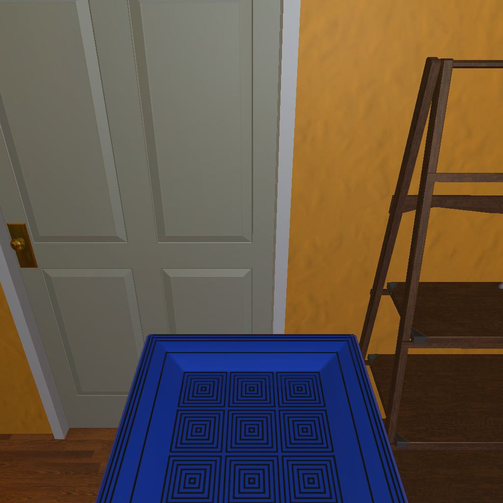

---------------------------------------------------------task: 3---------------------------------------------------------
--------------------------------------------------------------------------------------------------------------------------------------------------------------------
--------------------------------------------------------------------------------------------------------------------------------------------------------------------
Step:--------------------------------------------------------------------------7-------------------------------------------------------------------------------
----------------------------------------
VLM Prompt:
Image1:
**Instruction**
1. Analyze the provided image to identify all visible household objects, focusing on those relevant to the task description "look at plate under the floorlamp."
2. Use the analysis of the image and the task hint "The agent must find an object of the desired type, locate and turn on a light source with the desired object in-hand." to answer the question: what is the most reasonable action in the choices for the task description "look at plate under the floorlamp"?
4. Decide and write the answer using the template: The answer is: (i): , where i is the real number. If there is no desired object in the image, search every place based on **Initial Observation** to find the object. And if no one is exactly correct, choose a similar answer.
**Initial Observation**
You are in the middle of a room. Looking quickly around you, you can see armchair (1), garbagecan (1), tvstand (1), shelf (1-5), sofa (1), coffeetable (1), sidetable (1-2), drawer (1)
**Answer Choices**
(1): go to armchair 1
(2): go to garbagecan 1
(3): go to tvstand 1
(4): go to shelf 1
(5): go to shelf 2
(6): go to sofa 1
(7): go to coffeetable 1
(8): go to sidetable 2
(9): go to drawer 1
(10): go to shelf 5
(11): put plate 1 in/on shelf 4
(12): examine plate 1
(13): examine shelf 4
**Answer**
Let's think step by step by following the instructions.
----------------------------------------
----------------------------------------
Original Response:
The image shows a closed door, a wall, and part of a wooden ladder. There is no floorlamp or plate visible in the image. Based on the task description "look at plate under the floorlamp," we need to find a plate and a floorlamp.
From the **Initial Observation**, we know there are several household objects in the room, such as an armchair, garbagecan, tvstand, shelves, sofa, coffeetable, sidetable, and drawer. None of these are a floorlamp or a plate.
Since the image does not show the desired objects and they are not listed in the **Initial Observation**, we need to search every place to find the object. The task hint suggests that we need to find an object of the desired type (plate) and locate and turn on a light source (floorlamp) with the desired object in-hand.
Among the answer choices, none directly indicate finding a plate or a floorlamp. However, the closest action that could potentially lead to finding the plate is to examine shelves, as plates are often kept on shelves.
The answer is: (13): examine shelf 4.
----------------------------------------
----------------------------------------
>>> Refine Original VLM Response and Get Pure Action: examine shelf 4
----------------------------------------
-----------------------------------------------------------------
Running time: 10.477282762527466 seconds
Total Money: 0.75069
-----------------------------------------------------------------
-----------------------------------------------------------------
Text Observation:On the shelf 4, you see a statue 2.
-----------------------------------------------------------------
UNSUCCEED